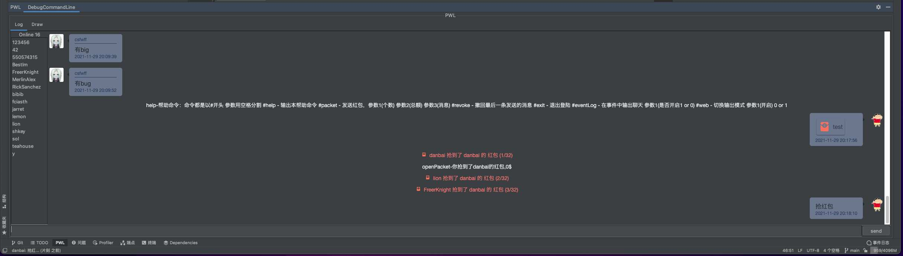
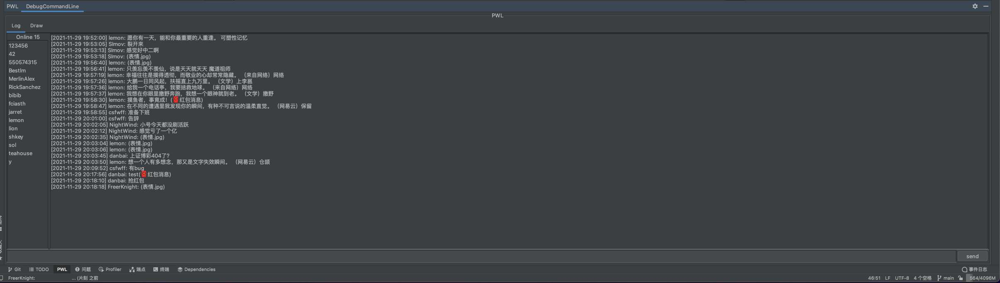
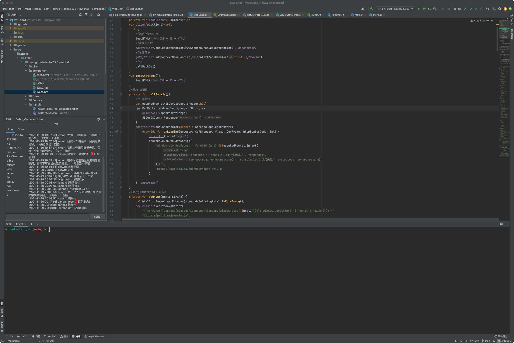
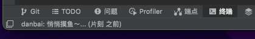
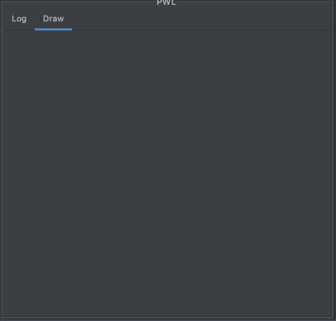

IDEA插件 pwl-chat
- 作者:
- 淡白
- 创建时间：
- 2021-11-29 20:31:46
- 插件开发
摘要：PWL(摸鱼派)是一个聚集了一群热爱工作和生活，富有学习干劲的新时代工作者的社区。PWL开发了一款插件，让工作者能够在工作中摸鱼同时学习。该插件包含了多种功能特性，例如命令控制、发送红包、撤回与防撤回、输入框粘贴图片、在线列表双击@、上下切换发送历史等等。插件提供了动静分明的Web界面和悄悄摸鱼的文字界面。用户可以自由拖动窗口位置，插件以左下角小巧文字的形式存在，轻松实现摸鱼于无形的效果。插件还支持使用命令来获取帮助、发送红包、撤回消息、退出登录等功能。插件的地址包括GitHub和未来可能审核通过的JB插件仓库地址。
介绍
PWL(摸鱼派)这里聚集着一群，热爱工作生活。富有学习干劲的新时代工作者。为了更进一步深入学习，加快交流和进步。从而推出了这一款插件，让你在工作中摸鱼摸鱼中学习。
功能特性
- 命令控制
- 发送红包，记录最近100个红包只需一句话帮你抢完
- 撤回与防撤回（因为我根本没去处理撤回哈哈☺）
- 输入框粘贴图片
- 在线列表双击@
- 上下切换发送历史更符合终端用户
- 等等...
界面介绍
有动静分明的web加持版

也有悄悄摸鱼的文字版

窗口位置随意拖动

左下角小巧文字，摸鱼于无形

tab切换带来无限可能

命令帮助
输入#help获取帮助
帮助命令：命令都是以#开头 参数用空格分割
#help - 输出本帮助命令
#packet - 发送红包，参数1(个数) 参数2(总额) 参数3(消息)
#revoke - 撤回最后一条发送的消息
#exit - 退出登陆
#eventLog - 在事件中输出聊天 参数1(是否开启1 or 0)
#web - 切换输出模式 参数1(开启) 0 or 1